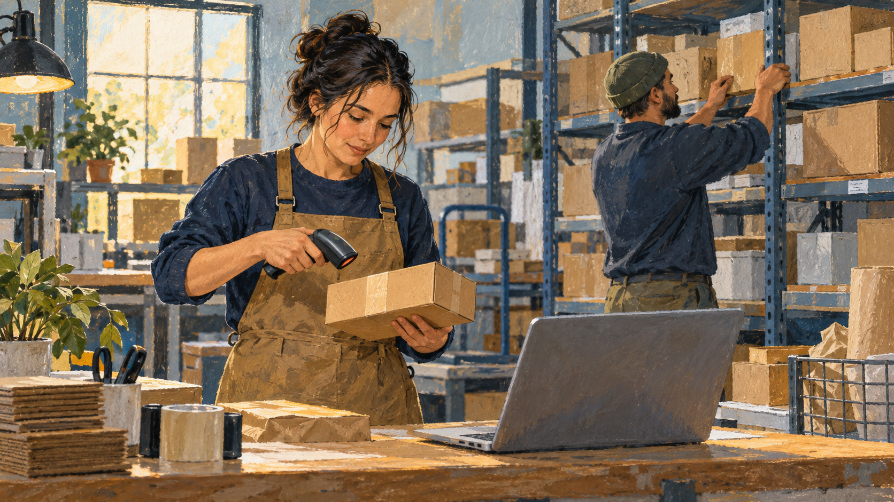

Companies · Technology
아마존 — 주문 버튼 뒤에는 무엇이 남아 있을까
화면에서 사는 물건은 결국 현실의 길을 지나온다

물건을 고르고 주문 버튼을 누른다. 화면에 확인 메시지가 뜨면 구매는 끝난 것처럼 느껴진다. 그러나 물건이 우리 집에 오려면 그때부터 많은 일이 시작되어야 한다. 누군가는 상품을 찾고 포장하고 운반해야 한다.
아마존은 이런 화면과 현실의 연결을 생각하기 좋은 기업이다. OpenStax의 경영학 교재는 2010년대 아마존의 온라인 판매 전략과 물류 거점, 회원제 서비스를 함께 설명한다. 인터넷 기업이라고 해서 중요한 일이 모두 인터넷 안에서만 이루어지는 것은 아니었다.
1. 고객의 질문은 생각보다 단순했다
교재가 소개하는 고객의 핵심 질문은 두 가지로 정리된다. 내가 원하는 것이 있는가, 그리고 필요할 때 받을 수 있는가. 상품을 많이 보여 주는 능력과 실제로 전달하는 능력이 함께 필요하다는 뜻이다.
첫 질문에만 답하면 목록이 훌륭한 전시장이 될 수 있다. 두 번째 질문을 해결하려면 재고와 배송, 도착할 시점을 다루어야 한다. 고객이 편리하다고 느끼는 경험은 이 두 가지가 어긋나지 않을 때 만들어진다. 화면의 간결함 뒤에는 다른 종류의 복잡함이 있다.
2. 온라인 상점에도 장소가 필요하다
아마존의 디지털 판매는 육지의 물류 거점과 연결되어 있었다. 물리적인 상품을 보관하고 주문에 맞추어 내보내야 하기 때문이다. 고객이 매장 안을 걸어 다니지 않는 대신 상품을 준비하는 공간은 다른 곳에 존재한다.
이 점을 알면 온라인과 오프라인을 완전히 갈라 생각하기 어렵다. 웹사이트가 바뀌는 속도와 창고·운송의 조건은 다르다. 화면에서 판매 지역을 넓히는 것과 그 지역에 안정적으로 물건을 보낼 수 있는 것은 같은 작업이 아니다.
3. 회원제는 한 번의 구매보다 긴 관계를 만든다
교재는 프라임 회원제를 아마존 전략의 중요한 일부로 설명한다. 고객이 구매할 때마다 개별적으로만 판단하는 관계에서, 일정한 조건의 서비스를 계속 이용하는 관계로 바꾸는 방식이다. 기업은 반복해서 찾아오는 고객과의 연결을 만들 수 있다.
여기서 당시 회원비나 제공 혜택을 오늘의 안내로 옮길 필요는 없다. 이번 글은 역사적 경영 사례를 다룬다. 중요한 것은 회원제가 화면 위에 붙은 할인 표시만이 아니라 반복 이용과 물류 서비스를 함께 생각하게 하는 사업 구조였다는 점이다.
4. 빠른 배송에는 눈에 덜 보이는 비용이 있다
물건을 빨리 받는 경험은 편리하다. 하지만 속도를 높이려면 운영에 필요한 자원과 비용이 생긴다. 교재는 아마존의 과제로 높은 배송 비용도 함께 소개한다. 주문이 많아졌다는 사실만으로 모든 주문이 같은 만큼 이익을 남긴다고 볼 수는 없다.
예를 들어 고객이 느끼는 짧은 기다림은 기업이 미리 준비한 공간과 작업의 결과일 수 있다. 이것은 특정 배송의 내부 원가를 계산한 설명은 아니다. 편리함의 가격이 어디에 놓이는지 질문하는 관점이다. 화면에서 무료로 보이는 서비스와 현실에서 비용이 들지 않는 서비스는 다르다.
5. 로봇이 있다고 사람이 없는 것은 아니다
해당 사례는 물류 공간에서 사람과 로봇이 함께 일하는 모습을 소개한다. 자동화가 중요한 역할을 하더라도 주문 하나가 아무런 사람의 일 없이 처리된다는 뜻은 아니다. 무엇을 기계가 맡고 무엇을 사람이 맡는지 별도로 살펴야 한다.
기술을 도입했다는 소식만 들으면 전체 과정이 한 번에 바뀐 것처럼 느껴진다. 실제로는 기존 작업과 새로운 장치가 함께 돌아갈 수 있다. 어느 한 창고의 설비를 다른 모든 곳에 적용하는 식으로 넓혀 말할 필요도 없다. 이번 그림 역시 특정 현장을 복원한 자료는 아니다.
6. 고객의 편리함 옆에 직원의 하루가 있다
교재는 당시 물류 현장의 노동 조건과 배송 계약자들의 부담에 대한 비판도 다룬다. 서비스의 속도를 평가할 때 고객이 기다린 시간만 볼 수는 없다는 뜻이다. 그 시간을 줄이는 과정에서 일하는 사람의 경험도 생긴다.
이것은 기업의 모든 활동을 한 가지 평가로 끝내려는 이야기가 아니다. 다만 매출과 이용자의 만족이 높다는 사실이 근무 조건에 관한 질문을 자동으로 해결하지는 않는다. 같은 사업을 고객과 직원, 주변의 다른 기업이 서로 다른 자리에서 경험할 수 있다.
7. 큰 플랫폼은 다른 가게에도 영향을 준다
온라인 판매가 커지면 고객뿐 아니라 다른 판매자의 환경도 달라진다. 교재는 독립 사업자들이 아마존과의 경쟁을 중요한 문제로 보았던 사례를 소개한다. 한 기업의 편리한 서비스가 시장의 다른 참여자에게는 새로운 대응을 요구할 수 있었다.
이 관계를 성공한 회사와 뒤처진 가게라는 두 칸으로만 정리할 필요는 없다. 규모와 배송 체계, 고객이 찾아오는 경로가 다르면 선택할 수 있는 방법도 달라진다. 기업 이야기를 읽는 재미는 한 회사의 성장뿐 아니라 그 주변의 관계가 바뀌는 데도 있다.
8. 버튼 다음의 시간을 떠올리기
함께 실은 AI 삽화는 상품을 확인하고 포장하는 작업장의 분위기를 표현했다. 아마존의 실제 직원·창고·현재 표준 작업을 재현한 자료는 아니다. 화면에서 보이지 않는 준비와 사람의 손을 떠올리기 위한 그림이다.
이 사례는 인터넷 기업의 경쟁력이 화면 디자인에만 있지 않다는 점을 보여 준다. 주문이 현실의 물건과 만나는 연결도 설계해야 했다. 다음에 작은 상자를 받을 때는 재생되는 알림뿐 아니라, 그 상자가 화면에서 문 앞까지 오는 동안 거쳤을 일들도 잠깐 생각해 볼 만하다.
이야기의 바탕이 된 자료
- OpenStax Principles of Management — 2010년대 아마존의 온라인 판매와 물류 ↗확인일 2026-10-30
온라인 판매와 육지 물류센터·프라임 회원제·원하는 상품과 필요한 때의 배송 · 사람과 로봇의 협력·높은 배송 비용·당시 노동 조건과 계약자 부담 비판 · 독립 판매자와 경쟁의 변화; 당시 수치·회원비를 현재 안내로 재사용하지 않음